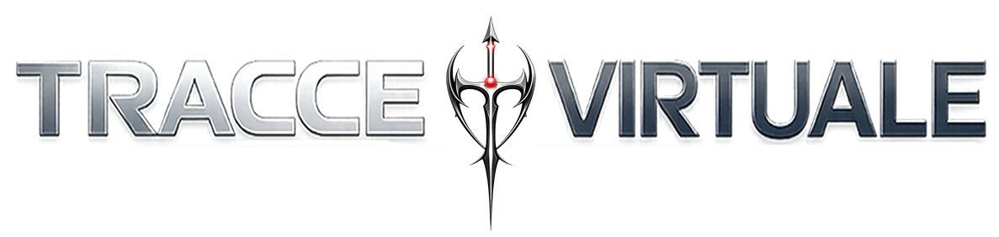
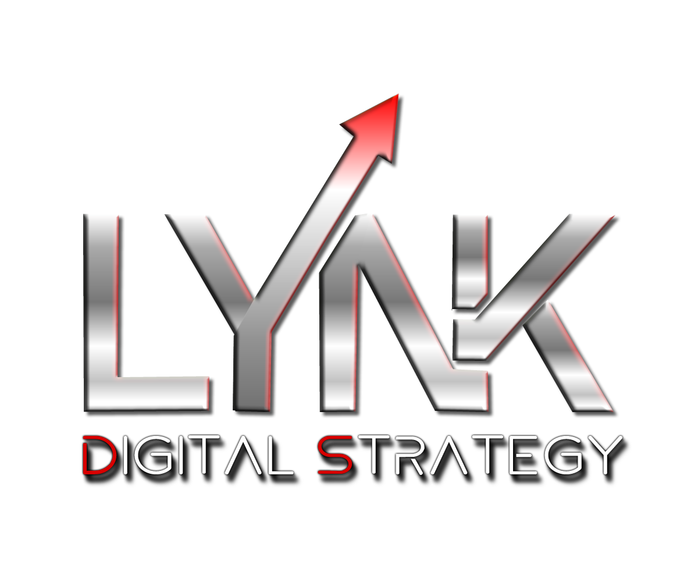
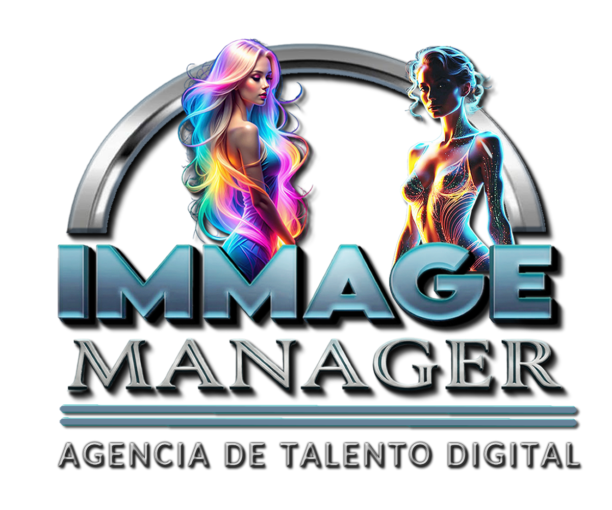

Inteligencia artificial
IA aplicada a la operación diaria: entiende, predice y ayuda a decidir mejor.
TRACCE VIRTUALE diseña, integra y evoluciona Ecosistemas Inteligentes para organizaciones que buscan transformar su operación mediante tecnología, automatización, inteligencia artificial y estrategias digitales. Convertimos negocios tradicionales en organizaciones más eficientes, rentables y preparadas para el futuro.
Diseñamos ecosistemas digitales capaces de atraer clientes, automatizar procesos, optimizar recursos, analizar información y facilitar la toma de decisiones.
IA aplicada a la operación diaria: entiende, predice y ayuda a decidir mejor.
Procesos que se ejecutan solos, con menos errores y mejor uso de tiempo y recursos.
Plataformas, paneles y sistemas web a la medida, integrados con el resto del ecosistema.
Estrategia, marca, imagen y contenido para atraer clientes de forma constante.
La información de tu organización convertida en decisiones claras y medibles.
Protección integrada desde el diseño: sistemas, datos, personas y reputación (LYNXUS).
Cada proyecto se construye como un sistema conectado, no como un conjunto de servicios independientes.
LYNK abre la puerta, TRACCE VIRTUALE ofrece la alta gama e IMMAGE MANAGERS cuida a las personas detrás de la imagen.

Diseño, integración y evolución de ecosistemas inteligentes para organizaciones: estrategia, arquitectura tecnológica e inteligencia aplicada.

Directorio virtual y mapa de negocios. Es la entrada accesible al ecosistema para empresas de todos los tamaños.

División de talento e imagen: representación, protección de identidad y presencia pública de personas.
Dentro del ecosistema, LYNXUS concentra la ciberseguridad y el trabajo con factores humanos.
Antes de que “lo digital” fuera obligatorio, ya publicábamos destinos en internet.
Portal-LZC y los portales de Acapulco e Ixtapa ponen a la región en internet.
Guías, directorios y turismo digital cuando pocos negocios tenían sitio web.
Esa experiencia se une con IA y seguridad para una nueva etapa.
Un directorio virtual con mapa donde los clientes encuentran negocios por categoría y ubicación. Es el primer paso natural: visibilidad inmediata, con la opción de crecer hacia los servicios de TRACCE VIRTUALE.
La mayoría de los incidentes comienzan con un descuido, un engaño o información expuesta. LYNXUS combina defensa técnica con formación y auditorías de exposición para cerrar esa brecha.
IMMAGE MANAGERS acompaña a personas con presencia pública: gestiona su imagen, cuida su identidad real y controla lo que se sabe de ellas en línea.
Un proceso en cinco pasos, claro desde el primer día.
Entendemos tu negocio y tu situación digital actual.
Definimos objetivos, canales y prioridades.
Diseñamos y publicamos tu presencia.
Aseguramos accesos, datos y reputación.
Medimos, ajustamos y escalamos.
Usamos inteligencia artificial para investigar, producir y automatizar. Cada resultado pasa por criterio humano antes de llegar a ti.
Cuéntanos qué necesitas. Tu mensaje llega por WhatsApp y respondemos personalmente.